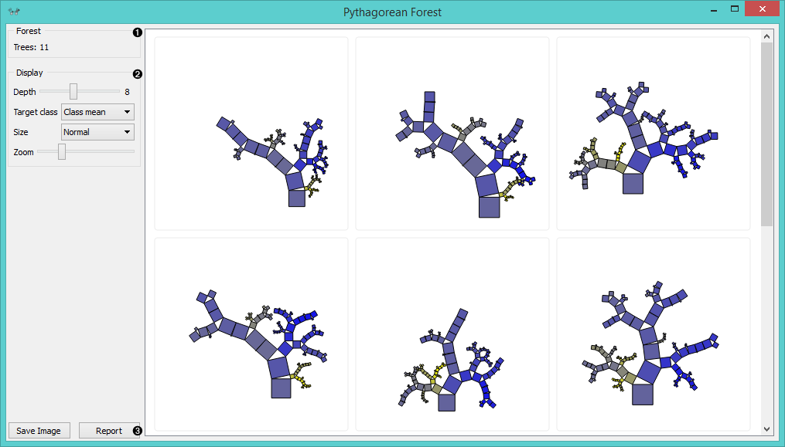
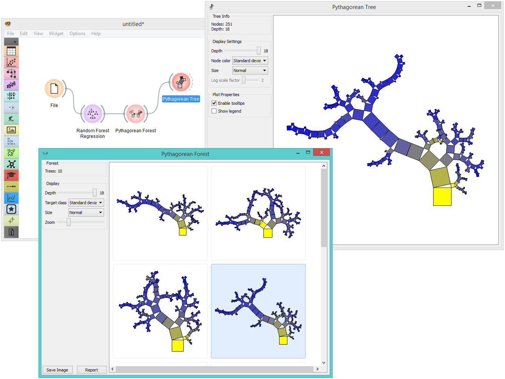

Pythagorean Forest
Pythagorean forest for visualizing random forests.
Inputs
- Random Forest: tree models from random forest
Outputs
- Tree: selected tree model
Pythagorean Forest shows all learned decision tree models from Random Forest widget. It displays them as Pythagorean trees, each visualization pertaining to one randomly constructed tree. In the visualization, you can select a tree and display it in Pythagorean Tree widget. The best tree is the one with the shortest and most strongly colored branches. This means few attributes split the branches well.
Widget displays both classification and regression results. Classification requires discrete target variable in the dataset, while regression requires a continuous target variable. Still, they both should be fed a Tree on the input.

- Information on the input random forest model.
- Display parameters:
- Depth: set the depth to which the trees are grown.
- Target class: set the target class for coloring the trees. If None is selected, the tree will be white. If the input is a classification tree, you can color the nodes by their respective class. If the input is a regression tree, the options are Class mean, which will color tree nodes by the class mean value and Standard deviation, which will color them by the standard deviation value of the node.
- Size: set the size of the nodes. Normal will keep the nodes the size of the subset in the node. Square root and Logarithmic are the respective transformations of the node size.
- Zoom: allows you to see the size of the tree visualizations.
- Save Image: save the visualization to your computer as a .svg or .png file. Report: produce a report.
Example
Pythagorean Forest is great for visualizing several built trees at once. In the example below, we’ve used housing dataset and plotted all 10 trees we’ve grown with Random Forest. When changing the parameters in Random Forest, visualization in Pythagorean Forest will change as well.
Then we’ve selected a tree in the visualization and inspected it further with Pythagorean Tree widget.

References
Beck, F., Burch, M., Munz, T., Di Silvestro, L. and Weiskopf, D. (2014). Generalized Pythagoras Trees for Visualizing Hierarchies. In IVAPP ‘14 Proceedings of the 5th International Conference on Information Visualization Theory and Applications, 17-28.